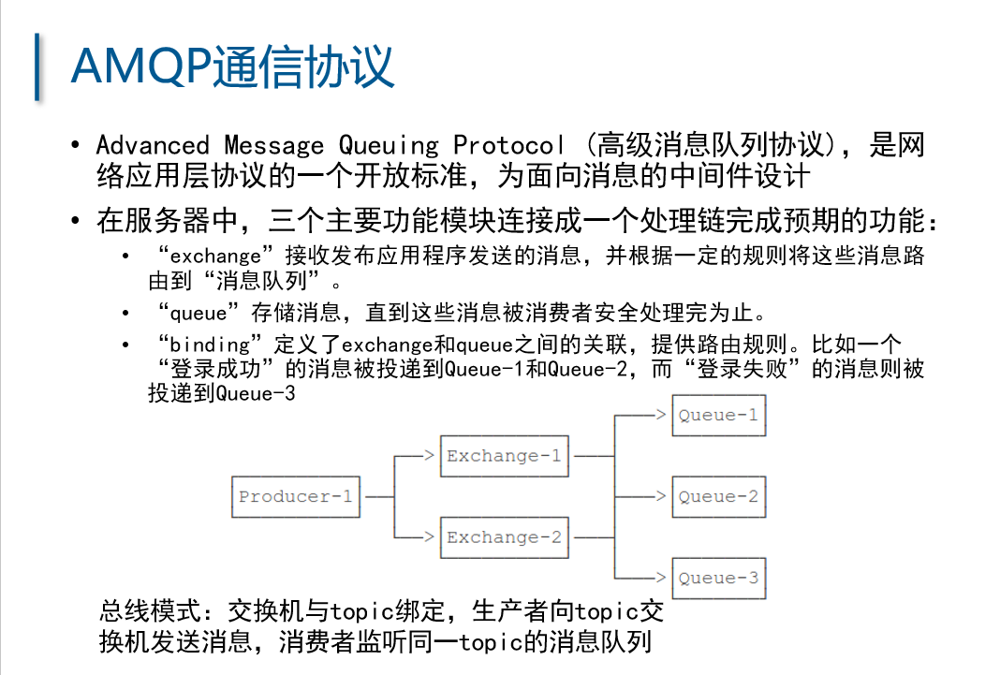

Prerequisites
- kafka/rabbitmq
- jdk1.8
- spring: https://start.aliyun.com/
一、实验
1.1 Kafka实验
启动 Kafka 服务，默认端口9092
1.2 RabbitMQ C 发送接收测试
先启动消费者客户端开启监听：1
./examples/amqp_listen 192.168.123.1 5672 amq.direct test
执行 amqp_listen 命令会自动创建一个queue，这里是test，如果想直接使用已有的queue，可以采用amqp_listenq 命令
然后启动生产者客户端1
./examples/ampq_sendstring 192.168.123.1 5672 amq.direct test "some message"
发送成功后生产者无返回消息，消费者将返回显示
Note: debug listen 程序过程中返回 socket -9 error 是调试超时导致的
rabbitmq服务端的log显示：1
2
32021-03-30 20:11:26.678 [info] <0.3044.4> accepting AMQP connection <0.3044.4> (192.168.123.100:38380 -> 192.168.123.1:5672)
2021-03-30 20:11:28.556 [error] <0.3044.4> closing AMQP connection <0.3044.4> (192.168.123.100:38380 -> 192.168.123.1:5672):
{handshake_timeout,frame_header}
有时候frame_header会改成handshake
所以为了调试方便，服务端的rabbitmq.conf中需要加入这3行设置：1
2
3handshake_timeout = 120000
ssl_handshake_timeout = 60000
heartbeat = 100
handshake_timeout 和 ssl_handshake_timeout 的单位都是 ms，heartbeat 的单位是 s
二、 Kafka 和 RabbitMQ 的对比
Kafka的设计初衷是分布式流式系统，而RabbitMQ是分布式消息队列。
RabbitMQ的特点是：使用Erlang编写，消息延迟率低（ms级别），但是不支持JMS通信协议，底层协议为AMQP，最大的特点是添加对于交换机的支持。
而Kafka没有队列这个概念，而是按照类别（topic）进行存储，尤其擅长处理大数据日志。它支持高并发情况和Java Spring集成，持久化数据存储使用 ZooKeeper，支持多topic模式的分布式部署，需要使用Scala进行编写。
2.1 AMQP协议

2.1.1 RoutingKey
交换机（Exchange）可以根据 RoutingKey 的值绑定不同的队列。
消息发往不同的 RoutingKey 的过程即发送不同的消息队列的过程。
2.2.2 Channel
生产者或消费者与RabbitMQ的连接通道称为Channel
2.2.3 AMQP 消息格式
- 发送消息头（8字节）：AMQP0xyz，AMQP协议版本号
- content-type: 消息类型
- content-encoding： 消息编码
- message-id：唯一标识1条消息
- timestamp：消息创建时间
- expiration：消息过期时间
- delivery-mode： 在RabbitMQ中表明将消息写入磁盘或者内存队列
- app-id 和 user-id： 帮助追踪出现问题的消息发布者应用程序
- type： 定义发布者和消费者之间的契约
- reply-to： 实现响应消息的路由
- 消息内容使用字节流传输
如何避免消息的重复发送和重复接收
重复发送问题存在多种可能的触发场景：
- 发送方成功将消息发送给RabbitMQ后，因为网络或者服务宕机、导致中间件没有及时向消息发送confirm，触发了发送方的重新发送。
重复接收问题可能的触发场景：
为了防止中间件进程中止或者宕机产生了消息的丢失问题，需要配置消息中间件的持久化存储：
- 配置消息队列为 consistent（持久化）模式
- 发送的消息也需要添加 persistent=2 参数，表示消息需要持久化存储到中间件。
参考文献：
- RabbitMQ 配置：https://www.rabbitmq.com/configure.html
- RabbitMQ消息持久化